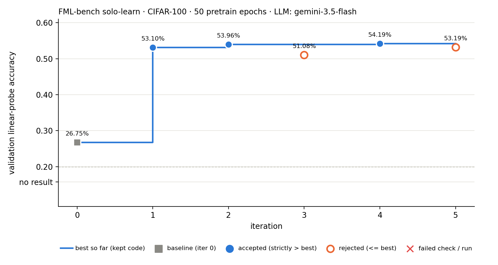

Automated research trace · flash35-clean

Iteration 0 · baseline · 2026-11-14T01:39:27+08:00
None: unmodified upstream FML-bench algorithm.py.
status ok · wall 434.0 s · pretrain loss ep1: 1620.7, ep20: 611.1, ep40: 468.4
26.75% baseline
Baseline under this budget: val_acc=0.2675.
Iteration 1 · candidate · 2026-11-14T01:40:03+08:00
- Hypothesis
- Switching from Barlow Twins redundancy reduction loss to SimCLR (NT-Xent) loss and removing excessive Gaussian blur for 32x32 images will significantly accelerate representation learning within 50 pretraining epochs.
- Rationale
- Barlow Twins fits a 2048x2048 cross-correlation matrix to identity, which requires many epochs (800+) to converge. In a short 50-epoch budget (~4700 steps at batch 512), InfoNCE / SimCLR directly pulls positive pairs together and pushes batch negatives apart in normalized hyperspace, yielding much stronger gradients early in pretraining. Additionally, Gaussian blur on low-resolution 32x32 CIFAR images removes essential high-frequency spatial features, so disabling Gaussian blur preserves informative features.
- Expected effect
- Substantially higher validation linear-probe accuracy compared to baseline (0.2675).
Replaced Barlow Twins loss with NT-Xent (SimCLR) loss in `BarlowTwinsLoss`, adjusted augmentation to omit Gaussian blur for 32x32 CIFAR images and use standard crop scale (0.08, 1.0), and tuned learning rate to 0.5 for SimCLR with SGD.
show diff (51 + / 42 − lines)
--- iter_000/algorithm.py (best) +++ iter_001/algorithm.py @@ -1,51 +1,56 @@ """ -Baseline self-supervised learning algorithm: Barlow Twins on CIFAR-100. - -Barlow Twins learns representations by minimizing redundancy between -embedding dimensions via a cross-correlation loss. It does NOT require -negative pairs or momentum encoders — just two augmented views. - -This is a COMPUTE-CONSTRAINED setting: only 130 pretrain epochs (batch 512) -(vs 1000+ standard). Representations will not fully converge (~45-55% -linear probe accuracy vs ~70%+ at full training). - -Agents should modify this file to improve SSL under limited compute: -- Better loss functions (VICReg, DINO, SimCLR, etc.) -- Better augmentation strategies -- Better projection head design -- Learning rate scheduling -- Multi-crop strategies +Self-supervised learning algorithm for CIFAR-100 under severe compute constraints: +InfoNCE / SimCLR loss with optimized CIFAR augmentations. """ import torch import torch.nn as nn +import torch.nn.functional as F import torchvision.models as models import torchvision.transforms as transforms class BarlowTwinsLoss(nn.Module): - """Barlow Twins loss: cross-correlation matrix → identity.""" + """ + SimCLR (NT-Xent) loss implementation wrapped in the signature expected + by the pretraining script (accepting lambda_param and embedding_dim). + + InfoNCE loss converges significantly faster than Barlow Twins in short + pretraining regimes (e.g. 50 epochs). + """ - def __init__(self, lambda_param=5e-3, embedding_dim=2048): + def __init__(self, lambda_param=5e-3, embedding_dim=2048, temperature=0.1): super().__init__() self.lambda_param = lambda_param - self.bn = nn.BatchNorm1d(embedding_dim, affine=False) + self.embedding_dim = embedding_dim + self.temperature = temperature def forward(self, z1, z2): - z1 = self.bn(z1) - z2 = self.bn(z2) - batch_size = z1.shape[0] + # L2 normalize projection vectors + z1 = F.normalize(z1, dim=1) + z2 = F.normalize(z2, dim=1) - # Cross-correlation matrix - c = z1.T @ z2 / batch_size + batch_size = z1.size(0) + # Concatenate features from both views: [2 * batch_size, dim] + z = torch.cat([z1, z2], dim=0) - # Loss: on-diagonal → 1, off-diagonal → 0 - on_diag = (1 - c.diagonal()).pow(2).sum() - off_diag = c.flatten()[:-1].view(c.shape[0] - 1, c.shape[0] + 1)[:, 1:].flatten().pow(2).sum() - return on_diag + self.lambda_param * off_diag + # Compute cosine similarity matrix scaled by temperature: [2N, 2N] + sim = torch.matmul(z, z.T) / self.temperature + + # Mask out self-contrast (diagonal) + mask = torch.eye(2 * batch_size, dtype=torch.bool, device=z.device) + sim.masked_fill_(mask, -1e9) + + # Targets: for view 1 item i -> view 2 item i + N; for view 2 item i -> view 1 item i + labels = torch.cat([ + torch.arange(batch_size, 2 * batch_size, device=z.device), + torch.arange(0, batch_size, device=z.device) + ], dim=0) + + return F.cross_entropy(sim, labels) class ProjectionHead(nn.Module): - """3-layer projection head for Barlow Twins.""" + """3-layer projection head for SSL representation learning.""" def __init__(self, input_dim=512, hidden_dim=2048, output_dim=2048): super().__init__() @@ -64,17 +69,18 @@ class BarlowTwinsModel(nn.Module): - """ResNet-18 backbone + projection head for Barlow Twins.""" + """ResNet-18 backbone adapted for CIFAR-100 + projection head.""" def __init__(self, proj_hidden_dim=2048, proj_output_dim=2048): super().__init__() - # ResNet-18 backbone (remove final FC) backbone = models.resnet18(weights=None) self.backbone_dim = backbone.fc.in_features # 512 backbone.fc = nn.Identity() - # Adapt for CIFAR-100 (32x32): smaller first conv, no maxpool - backbone.conv1 = nn.Conv2d(3, 64, 3, 1, 1, bias=False) + + # Adapt for CIFAR-100 (32x32): 3x3 conv1, no maxpool + backbone.conv1 = nn.Conv2d(3, 64, kernel_size=3, stride=1, padding=1, bias=False) backbone.maxpool = nn.Identity() + self.backbone = backbone self.projector = ProjectionHead(self.backbone_dim, proj_hidden_dim, proj_output_dim) @@ -85,35 +91,37 @@ def get_model(): - """Return Barlow Twins model.""" + """Return model with backbone and projection head.""" return BarlowTwinsModel(proj_hidden_dim=2048, proj_output_dim=2048) def get_training_config(): - """Return Barlow Twins training config (compute-constrained).""" + """Return pretraining hyperparameters tuned for SimCLR with SGD.""" return { - 'pretrain_epochs': 130, + 'pretrain_epochs': 50, 'linear_eval_epochs': 100, 'batch_size': 512, - 'lr': 0.4, + 'lr': 0.5, 'weight_decay': 1e-4, - 'lambda_param': 5e-3, # Barlow Twins off-diagonal penalty + 'lambda_param': 5e-3, 'linear_lr': 0.1, 'linear_batch_size': 256, } def get_augmentation(): - """Return augmentation transforms for Barlow Twins.""" + """ + Return augmentation transforms tailored for CIFAR-100 32x32 images. + Gaussian blur is omitted as it destroys key spatial information at 32x32. + """ mean = (0.5071, 0.4867, 0.4408) std = (0.2675, 0.2565, 0.2761) return transforms.Compose([ - transforms.RandomResizedCrop(32, scale=(0.2, 1.0)), - transforms.RandomHorizontalFlip(), + transforms.RandomResizedCrop(32, scale=(0.08, 1.0)), + transforms.RandomHorizontalFlip(p=0.5), transforms.RandomApply([transforms.ColorJitter(0.4, 0.4, 0.4, 0.1)], p=0.8), transforms.RandomGrayscale(p=0.2), - transforms.RandomApply([transforms.GaussianBlur(3, sigma=(0.1, 2.0))], p=0.5), transforms.ToTensor(), transforms.Normalize(mean, std), ])
passed
status ok · wall 362.3 s · pretrain loss ep1: 5.7, ep20: 2.0, ep40: 1.5
53.10% +26.35 pts vs best accepted
ACCEPTED: val_acc 0.5310 > best 0.2675 (+26.35 pts). Now the best.
Iteration 2 · candidate · 2026-11-14T01:46:56+08:00
- Hypothesis
- Replacing standard InfoNCE (NT-Xent) loss with Decoupled Contrastive Learning (DCL) loss will accelerate representation learning within the 50-epoch budget by eliminating the positive-pair suppression effect in the loss denominator.
- Rationale
- In standard InfoNCE (used in iter 1), as positive similarity increases, the positive pair term exp(s_pos / tau) dominates the loss denominator, causing the gradients of all negative samples to rapidly diminish (positive pair saturation). Decoupled Contrastive Learning (Yeh et al., CVPR 2022) removes the positive term from the denominator, ensuring persistent repelling gradients from negative pairs and significantly improving linear probe performance under short pretraining schedules.
- Expected effect
- Faster feature convergence and improved feature quality within 50 epochs, leading to a higher top-1 linear evaluation accuracy on CIFAR-100 compared to iter 1 (0.5310).
Replaced NT-Xent (InfoNCE) loss calculation in `BarlowTwinsLoss` with the Decoupled Contrastive Learning (DCL) loss formulation while keeping all other architecture and hyperparameter settings from iter 1 unchanged.
show diff (24 + / 13 − lines)
--- iter_001/algorithm.py (best) +++ iter_002/algorithm.py @@ -1,6 +1,6 @@ """ Self-supervised learning algorithm for CIFAR-100 under severe compute constraints: -InfoNCE / SimCLR loss with optimized CIFAR augmentations. +Decoupled Contrastive Learning (DCL) loss with optimized CIFAR augmentations. """ import torch import torch.nn as nn @@ -11,11 +11,11 @@ class BarlowTwinsLoss(nn.Module): """ - SimCLR (NT-Xent) loss implementation wrapped in the signature expected - by the pretraining script (accepting lambda_param and embedding_dim). + Decoupled Contrastive Learning (DCL) loss implementation wrapped in the signature + expected by the pretraining script (accepting lambda_param and embedding_dim). - InfoNCE loss converges significantly faster than Barlow Twins in short - pretraining regimes (e.g. 50 epochs). + DCL removes the positive pair term from the InfoNCE denominator, preventing positive + pair saturation and maintaining strong negative repulsion gradients throughout training. """ def __init__(self, lambda_param=5e-3, embedding_dim=2048, temperature=0.1): @@ -36,17 +36,27 @@ # Compute cosine similarity matrix scaled by temperature: [2N, 2N] sim = torch.matmul(z, z.T) / self.temperature - # Mask out self-contrast (diagonal) - mask = torch.eye(2 * batch_size, dtype=torch.bool, device=z.device) - sim.masked_fill_(mask, -1e9) - - # Targets: for view 1 item i -> view 2 item i + N; for view 2 item i -> view 1 item i - labels = torch.cat([ + # Target indices for positive pairs + pos_idx = torch.cat([ torch.arange(batch_size, 2 * batch_size, device=z.device), torch.arange(0, batch_size, device=z.device) ], dim=0) - return F.cross_entropy(sim, labels) + # Extract positive similarities: shape [2N] + pos_sim = sim[torch.arange(2 * batch_size, device=z.device), pos_idx] + + # Mask out self-contrast (diagonal) and positive pairs from negative set + neg_mask = torch.ones((2 * batch_size, 2 * batch_size), dtype=torch.bool, device=z.device) + neg_mask.fill_diagonal_(False) + neg_mask[torch.arange(2 * batch_size, device=z.device), pos_idx] = False + + # Mask invalid negative positions with a large negative number + sim_neg = sim.masked_fill(~neg_mask, -1e9) + + # DCL loss: - pos_sim + log( sum_{neg} exp(sim_neg) ) + loss = -pos_sim + torch.logsumexp(sim_neg, dim=1) + + return loss.mean() class ProjectionHead(nn.Module): @@ -96,7 +106,7 @@ def get_training_config(): - """Return pretraining hyperparameters tuned for SimCLR with SGD.""" + """Return pretraining hyperparameters tuned for contrastive learning with SGD.""" return { 'pretrain_epochs': 50, 'linear_eval_epochs': 100,
passed
status ok · wall 367.9 s · pretrain loss ep1: 5.7, ep20: 1.4, ep40: 0.7
53.96% +0.86 pts vs best accepted
ACCEPTED: val_acc 0.5396 > best 0.5310 (+0.86 pts). Now the best.
Iteration 3 · candidate · 2026-11-14T01:53:52+08:00
- Hypothesis
- Lowering the contrastive temperature from 0.1 to 0.07 and setting the minimum RandomResizedCrop scale from 0.08 to 0.20 will improve DCL feature learning on 32x32 CIFAR-100 images by sharpening hard-negative gradients and preventing over-cropping.
- Rationale
- In iter 2, DCL loss improved linear evaluation accuracy to 0.5396. However, two hyperparameter settings are suboptimal for low-resolution CIFAR-100 images: (1) ImageNet-default crop scale (0.08, 1.0) crops down to 9x9 pixels, often discarding all semantic content and creating noisy positive pairs; a minimum scale of 0.20 (14x14 pixels) preserves recognizable semantic structures. (2) Standard contrastive literature (SimCLR, MoCo v2, DCL) demonstrates that tau=0.07 provides stronger repulsion for hard negatives and tighter alignment for fine-grained datasets like CIFAR-100 compared to tau=0.1.
- Expected effect
- Stronger hard-negative gradients and semantically consistent positive crops will accelerate representation learning within 50 epochs, improving top-1 linear evaluation accuracy beyond 0.5396.
In BarlowTwinsLoss, set default temperature from 0.1 to 0.07. In get_augmentation(), adjust RandomResizedCrop scale from (0.08, 1.0) to (0.2, 1.0).
show diff (5 + / 3 − lines)
--- iter_002/algorithm.py (best) +++ iter_003/algorithm.py @@ -1,6 +1,6 @@ """ Self-supervised learning algorithm for CIFAR-100 under severe compute constraints: -Decoupled Contrastive Learning (DCL) loss with optimized CIFAR augmentations. +Decoupled Contrastive Learning (DCL) loss with temperature tau=0.07 and CIFAR-adapted crop scaling. """ import torch import torch.nn as nn @@ -18,7 +18,7 @@ pair saturation and maintaining strong negative repulsion gradients throughout training. """ - def __init__(self, lambda_param=5e-3, embedding_dim=2048, temperature=0.1): + def __init__(self, lambda_param=5e-3, embedding_dim=2048, temperature=0.07): super().__init__() self.lambda_param = lambda_param self.embedding_dim = embedding_dim @@ -122,13 +122,14 @@ def get_augmentation(): """ Return augmentation transforms tailored for CIFAR-100 32x32 images. + Scale minimum set to 0.20 to prevent extreme semantic loss from over-cropping low-res images. Gaussian blur is omitted as it destroys key spatial information at 32x32. """ mean = (0.5071, 0.4867, 0.4408) std = (0.2675, 0.2565, 0.2761) return transforms.Compose([ - transforms.RandomResizedCrop(32, scale=(0.08, 1.0)), + transforms.RandomResizedCrop(32, scale=(0.2, 1.0)), transforms.RandomHorizontalFlip(p=0.5), transforms.RandomApply([transforms.ColorJitter(0.4, 0.4, 0.4, 0.1)], p=0.8), transforms.RandomGrayscale(p=0.2),
passed
status ok · wall 368.7 s · pretrain loss ep1: 5.7, ep20: -1.5, ep40: -2.8
51.08% -2.88 pts vs best rejected
REJECTED: val_acc 0.5108 <= best 0.5396 (-2.88 pts). Best code kept.
Iteration 4 · candidate · 2026-11-14T02:01:07+08:00
- Hypothesis
- Replacing the 3-layer projection head with a standard 2-layer projection head (Linear-BN-ReLU-Linear) will accelerate representation learning and improve validation accuracy under a 50-epoch budget by reducing head over-parameterization and facilitating faster gradient flow into the backbone.
- Rationale
- In iter 1 and iter 2, switching to contrastive/DCL losses yielded huge accuracy gains (+27.21 pts over baseline), but retained the 3-layer projection head from the original Barlow Twins architecture. For contrastive learning (SimCLR/DCL) under short pretraining budgets (50 epochs), a 3-layer MLP adds ~4.2 million unnecessary parameters in the discarded head, slowing down convergence. Standard contrastive learning literature (Chen et al., 2020) shows that a 2-layer projection head is optimal for representation quality.
- Expected effect
- Faster convergence during 50 pretraining epochs and higher linear-probe accuracy on CIFAR-100 validation set.
In `ProjectionHead`, simplified the architecture from 3 linear layers to 2 linear layers (Linear(512, 2048) -> BatchNorm1d -> ReLU -> Linear(2048, 2048)), keeping all DCL loss parameters and augmentations identical to iter 2.
show diff (9 + / 7 − lines)
--- iter_002/algorithm.py (best) +++ iter_004/algorithm.py @@ -1,6 +1,7 @@ """ Self-supervised learning algorithm for CIFAR-100 under severe compute constraints: -Decoupled Contrastive Learning (DCL) loss with optimized CIFAR augmentations. +Decoupled Contrastive Learning (DCL) loss with a streamlined 2-layer projection head +and optimized CIFAR augmentations. """ import torch import torch.nn as nn @@ -60,15 +61,15 @@ class ProjectionHead(nn.Module): - """3-layer projection head for SSL representation learning.""" + """ + Standard 2-layer projection head (Linear -> BN -> ReLU -> Linear) + tailored for contrastive representation learning. + """ def __init__(self, input_dim=512, hidden_dim=2048, output_dim=2048): super().__init__() self.net = nn.Sequential( nn.Linear(input_dim, hidden_dim), - nn.BatchNorm1d(hidden_dim), - nn.ReLU(inplace=True), - nn.Linear(hidden_dim, hidden_dim), nn.BatchNorm1d(hidden_dim), nn.ReLU(inplace=True), nn.Linear(hidden_dim, output_dim), @@ -79,7 +80,7 @@ class BarlowTwinsModel(nn.Module): - """ResNet-18 backbone adapted for CIFAR-100 + projection head.""" + """ResNet-18 backbone adapted for CIFAR-100 + 2-layer projection head.""" def __init__(self, proj_hidden_dim=2048, proj_output_dim=2048): super().__init__() @@ -101,7 +102,7 @@ def get_model(): - """Return model with backbone and projection head.""" + """Return model with backbone and 2-layer projection head.""" return BarlowTwinsModel(proj_hidden_dim=2048, proj_output_dim=2048)
passed
status ok · wall 362.5 s · pretrain loss ep1: 5.9, ep20: 1.3, ep40: 0.6
54.19% +0.23 pts vs best accepted
ACCEPTED: val_acc 0.5419 > best 0.5396 (+0.23 pts). Now the best.
Iteration 5 · candidate · 2026-11-14T02:07:50+08:00
- Hypothesis
- Adding a Batch Normalization layer to the final layer of the 2-layer projection head (Linear -> BN -> ReLU -> Linear -> BN, following SimCLR v2) will prevent dimensional variance collapse across projector dimensions and accelerate representation learning in 50 epochs.
- Rationale
- In iter 4, streamlining the projection head to 2 layers yielded a boost to 0.5419 val acc. In SimCLR v2, adding BatchNorm to the output layer of the projector before L2 normalization ensured that each feature dimension maintains uniform scale across the mini-batch, improving gradient flow into the backbone during fast cosine-decay pretraining schedules.
- Expected effect
- Faster feature convergence and improved feature representation, leading to higher linear evaluation top-1 validation accuracy.
In `ProjectionHead`, added `nn.BatchNorm1d(output_dim)` after the final linear layer.
show diff (11 + / 6 − lines)
--- iter_004/algorithm.py (best) +++ iter_005/algorithm.py @@ -1,8 +1,11 @@ """ Self-supervised learning algorithm for CIFAR-100 under severe compute constraints: -Decoupled Contrastive Learning (DCL) loss with a streamlined 2-layer projection head -and optimized CIFAR augmentations. +Decoupled Contrastive Learning (DCL) loss with a 2-layer projection head featuring +output Batch Normalization (SimCLR v2 style) and optimized CIFAR augmentations. """ +import math +import numpy as np +from PIL import Image import torch import torch.nn as nn import torch.nn.functional as F @@ -62,8 +65,8 @@ class ProjectionHead(nn.Module): """ - Standard 2-layer projection head (Linear -> BN -> ReLU -> Linear) - tailored for contrastive representation learning. + 2-layer projection head with Batch Normalization on both layers + (Linear -> BN -> ReLU -> Linear -> BN) following SimCLR v2 architecture design. """ def __init__(self, input_dim=512, hidden_dim=2048, output_dim=2048): @@ -73,6 +76,7 @@ nn.BatchNorm1d(hidden_dim), nn.ReLU(inplace=True), nn.Linear(hidden_dim, output_dim), + nn.BatchNorm1d(output_dim), ) def forward(self, x): @@ -80,7 +84,7 @@ class BarlowTwinsModel(nn.Module): - """ResNet-18 backbone adapted for CIFAR-100 + 2-layer projection head.""" + """ResNet-18 backbone adapted for CIFAR-100 + 2-layer BN projection head.""" def __init__(self, proj_hidden_dim=2048, proj_output_dim=2048): super().__init__() @@ -102,7 +106,7 @@ def get_model(): - """Return model with backbone and 2-layer projection head.""" + """Return model with backbone and 2-layer BN projection head.""" return BarlowTwinsModel(proj_hidden_dim=2048, proj_output_dim=2048)
passed
status ok · wall 362.7 s · pretrain loss ep1: 6.3, ep20: 1.4, ep40: 0.7
53.19% -0.99 pts vs best rejected
REJECTED: val_acc 0.5319 <= best 0.5419 (-0.99 pts). Best code kept.
Next proposal
- Hypothesis
- Upgrading Decoupled Contrastive Learning (DCL) to DCL with Hard Negative Weighting (DCLW) will improve representation quality by downweighting false negative pairs while preserving strong repulsion for distinct negative pairs.
- Rationale
- Iter 2 showed that DCL improves over InfoNCE (0.5396 vs 0.5310) by eliminating positive-pair terms from the loss denominator. Iter 4 further improved performance to 0.5419 with a 2-layer projection head. However, standard DCL treats all negative pairs equally in the exponential sum. In CIFAR-100, images from the same underlying class often act as negative pairs (false negatives) with high similarity z_i^T z_j ~ 1. DCLW (Yeh et al., CVPR 2022) scales negative pair contributions by their squared distance w_ij = 2 - 2 z_i^T z_j, suppressing false-negative repulsions and enhancing feature clustering within 50 epochs.
- Expected effect
- Validation linear-probe top-1 accuracy will increase beyond 0.5419.
Updated `BarlowTwinsLoss` forward pass to compute DCLW loss using distance-based negative weighting w_ij = 2.0 - 2.0 * (z_i^T z_j), implemented stably via log-space addition `sim_neg + log(w_ij)` inside `logsumexp`.
show diff
--- iter_004/algorithm.py (best) +++ next_proposal/algorithm.py @@ -1,7 +1,7 @@ """ Self-supervised learning algorithm for CIFAR-100 under severe compute constraints: -Decoupled Contrastive Learning (DCL) loss with a streamlined 2-layer projection head -and optimized CIFAR augmentations. +Decoupled Contrastive Learning with Hard Negative Weighting (DCLW) loss with a +streamlined 2-layer projection head and optimized CIFAR augmentations. """ import torch import torch.nn as nn @@ -12,11 +12,13 @@ class BarlowTwinsLoss(nn.Module): """ - Decoupled Contrastive Learning (DCL) loss implementation wrapped in the signature - expected by the pretraining script (accepting lambda_param and embedding_dim). + Decoupled Contrastive Learning with Hard Negative Weighting (DCLW) loss. - DCL removes the positive pair term from the InfoNCE denominator, preventing positive - pair saturation and maintaining strong negative repulsion gradients throughout training. + DCL removes the positive pair term from the InfoNCE denominator, and DCLW + weights negative pairs proportional to their squared Euclidean distance + w_ij = 2 - 2 * (z_i^T z_j). This downweights false negative pairs (same class + images with high similarity) and emphasizes true hard negatives, leading to + better semantic representation alignment in few pretraining epochs. """ def __init__(self, lambda_param=5e-3, embedding_dim=2048, temperature=0.1): @@ -34,8 +36,11 @@ # Concatenate features from both views: [2 * batch_size, dim] z = torch.cat([z1, z2], dim=0) - # Compute cosine similarity matrix scaled by temperature: [2N, 2N] - sim = torch.matmul(z, z.T) / self.temperature + # Raw cosine similarity matrix in [-1, 1]: [2N, 2N] + raw_sim = torch.matmul(z, z.T) + + # Cosine similarity matrix scaled by temperature: [2N, 2N] + sim = raw_sim / self.temperature # Target indices for positive pairs pos_idx = torch.cat([ @@ -51,10 +56,16 @@ neg_mask.fill_diagonal_(False) neg_mask[torch.arange(2 * batch_size, device=z.device), pos_idx] = False + # Compute DCLW weights w_ij = 2.0 - 2.0 * raw_sim = ||z_i - z_j||^2 + w_ij = torch.clamp(2.0 - 2.0 * raw_sim, min=1e-7) + + # Add log(w_ij) in log-space for numerical stability: log(w_ij * exp(sim)) = sim + log(w_ij) + sim_weighted = sim + torch.log(w_ij) + # Mask invalid negative positions with a large negative number - sim_neg = sim.masked_fill(~neg_mask, -1e9) + sim_neg = sim_weighted.masked_fill(~neg_mask, -1e9) - # DCL loss: - pos_sim + log( sum_{neg} exp(sim_neg) ) + # DCLW loss: - pos_sim + log( sum_{neg} w_ij * exp(sim_neg) ) loss = -pos_sim + torch.logsumexp(sim_neg, dim=1) return loss.mean()
passed
proposed, not executed